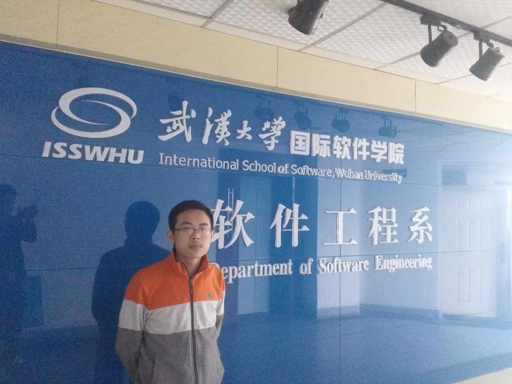

|  |
|
Lei Ke, UNDERGRADUATE (-2018) @WUHAN UNIVERSITY, Department of Software Engineering. Familiar with C + +, MATLAB and QT framework, skilled use of OpenCV and other third-party library. I started learning Machine Learning with relevant project and competition at the second semester of my sophomore year in the BDCC lab.
Interest Direction: Face Recognition and Nature Language Processing
Emotional analysis combined with social media:
1.Wang Z, Ke L, Cui X, et al. Monitoring Environmental Quality by Sniffing Social Media[J]. Sustainability, 2017, 9(2): 85.[pdf].
2.Wang, Z., Cui, X., Gao, L., Yin, Q., Ke, L., & Zhang, S. (2016). A hybrid model of sentimental entity recognition on mobile social media. EURASIP Journal on Wireless Communications and Networking, 2016(1), 253.[pdf].
Major participation in the project and competition during the undergraduate period:
Emotional Analysis Based on Social Media(2016.5-2016.9)
We crawled large amdunts of text data from Sina microblog,screened out the data with the environment (rivers, food safety, air quality, etc.)relation by time and geographical classification in the pretreatment(including invalid word filtering, Chinese word segmentation, etc.). We utilized SVM(Support Vector Machine) algorithm to make emotional analysis and determine the emotional tendencies of the text.Then, we further modeled the integrated attitude of residents from all over the country about environment quality(unit: province), gived out the environmental quality reference rankings, and made the comparison with the authoritative data published by CAS(Chinese Academy of Sciences). The corresponding project result was published in the SCI journal SUSTAINABILITY ,second author.Paper title:《Monitoring Environmental Quality by Sniffing Social Media》(http://www.mdpi.com/2071-1050/9/2/85/htm).
Face Recognition(2016.10-2016.12)
Participated in the the First National Network Public Opinion Analysis Technology Invitation organized by Chinese Academy of Sciences Information Engineering,face recognition direction,project leader.During the finals in Beijing,we made face recognition detection on the twenty thousand minutes of video.Our algorithm was based on PCA and SVM, utilizing OpenCV and some other third-party library.We finally won the Fifth(The first is the SenseTime).Also,we were the only undergraduate team in the finalists of the competition.Related Information：http://mp.weixin.qq.com/s/xaYm8QN13hHphpmjCRtKjA.Project open source address：https://git.oschina.net/Alfred_Zhang/face_recognition
Similarity Measure of Trajectory Data(2016.3-2016.6)
Participated in the Fifth "China Software Cup" National Student Software Design Competition sponsored by the Ministry of Education and Ministry of Industry and Information.Our selected problem was to make similarity measure of trajectory data based on latitude and longitude information.We implemented Frechet distance algorithm based on C ++ and utilized QT (GUI).This algorithm was used to calculate the track point and trajectory segment of the similarity.We successfully passed the national preliminary round and the project eventually won the national second prize in August in Nanjing finals. Project open source address：https://git.oschina.net/Alfred_Zhang/CnSoft
2017, COMAP's Mathematical Contest in Modeling, Honorable prize
2016, The Fifth "China Software Cup" National Student Software Design Competition, Second prize
2016, The First National Network Public Opinion Analysis Technology Invitation, face recognition project, Team leader
2016, National Inspirational Scholarship, Wuhan University
2015, National College Students Mathematics Competition ,Third Prize
Last updated by Lei Ke, April 2017.